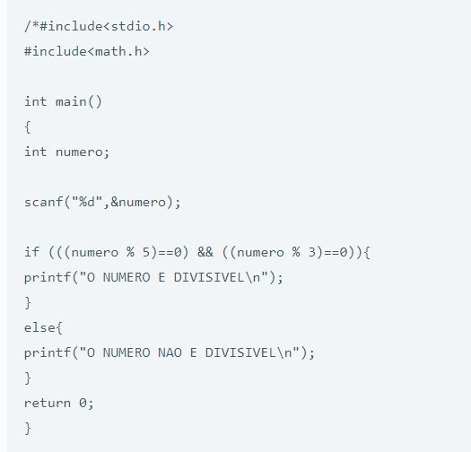
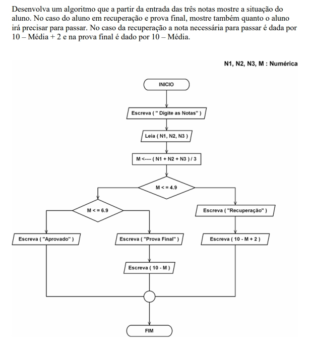

Desenvolver um algoritmo que leia um número inteiro e verifique se o número é divisível por 5 e por 3 ao mesmo tempo.
Faça um programa que peça o nome do usuário e imprima na tela:
Faça um programa que solicita a altura e imprima na tela:
Faça um programa que solicita a idade e imprima na tela:
Faça um programa que transforma um número ímpar em par.

Crie um fluxograma para fazer um café:
Crie um fluxograma para preparar um sanduíche:
Crie um fluxograma para atravessar a rua:
Crie um fluxograma que verifique uma senha e aprove se for correta: